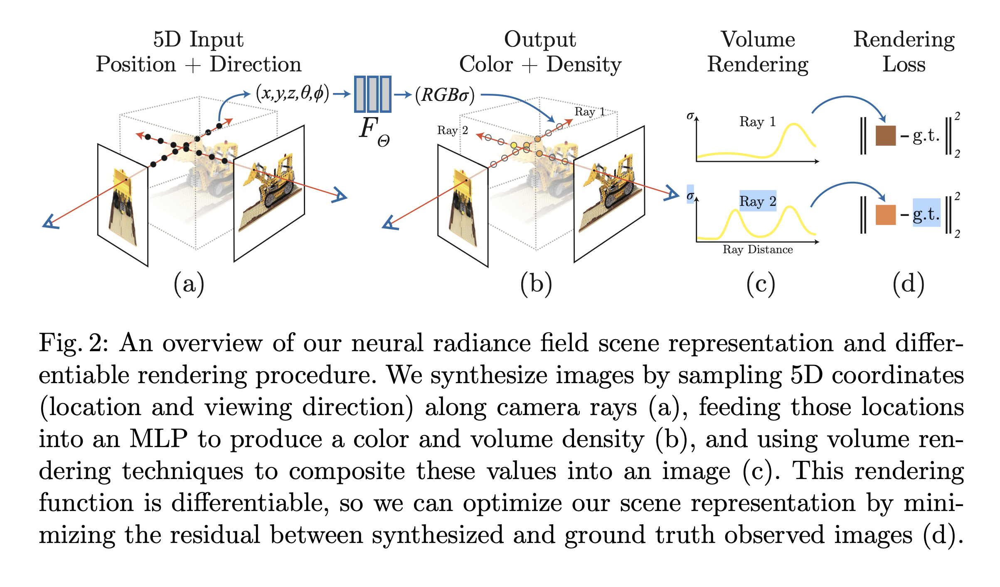

[Paper Note] NeRF: Representing Scenes as Neural Radiance Fields for View Synthesis
NeRF: Representing Scenes as Neural Radiance Fields for View Synthesis
The core method of this approach is to represent a 3D scene using a Multilayer Perceptron (MLP). The network takes a 3D position and a viewing direction as input and outputs the corresponding color and volume density.
Given the focal length and the camera’s image plane, a ray is cast from the camera through each pixel. Along this ray, a series of points are sampled. These points, along with the direction of the ray, are fed into the MLP. The outputs are then integrated using a volume rendering formula to determine the final color of the pixel. The model is trained using a Mean Squared Error (MSE) loss between the rendered pixel and the ground truth.

- Density (σ) controls the opacity of a point and how much it obscures points behind it.
- A coarse-to-fine strategy using two networks speeds up the sampling process.
- Positional encoding transforms scalar coordinates into high-dimensional vectors, allowing the MLP to represent high-frequency details.
- This method is more storage-efficient than high-resolution voxel grids.
- The primary application is Novel View Synthesis.
Neural networks can be used to record textures or indirect illumination within 3D scenes.
Neural 3D Shape Representations
- Some methods record a Signed Distance Function (SDF), representing the shortest distance to an object’s surface.
- Others record an occupancy field, representing the probability that a coordinate is inside an object.
- Differentiable rendering functions allow training using only 2D images without 3D ground truth.
- A major limitation of these methods is their inability to represent complex geometry or high-frequency details.
Mesh and Voxel Approaches
- One can start with an initial mesh (like a sphere) and deform it using differentiable rendering. However, gradient-based mesh optimization is often difficult.
- Voxel-based methods avoid mesh issues but suffer from high memory costs, which limits resolution.
Method
The MLP takes a 3D position (x,y,z) and a 2D viewing direction (θ,ϕ) as input.
Input Generation
- Rays are cast from the pixel origin into the scene in random directions.
MLP Output
- The network outputs emitted color (r,g,b) and volume density σ.
- To ensure multi-view consistency, density depends only on the 3D position. The first 8 layers of the MLP process only the position to output a 256-dimensional feature vector and the density.
- This feature vector is then concatenated with the viewing direction and passed through one additional layer to produce the view-dependent RGB color.
Volume Rendering
The color of a ray C(r) is calculated as:
C(r)=∫tntfT(t)σ(r(t))c(r(t),d)dt
- tn,tf are the near and far bounds.
- T(t) is the probability that the ray travels from tn to t without being obstructed.
- r(t) is the ray equation; d is the viewing direction.
- σ(r(t)) is the volume density.
- c(r(t),d) is the color.
In simple terms, the integral is the product of:
- The probability of the ray reaching a point (occlusion).
- The density at that point (how much light it absorbs/contributes).
- The color at that point.
To approximate this integral numerically, N points are sampled by dividing the space between the near and far bounds into N bins and sampling uniformly within each bin. This randomness helps the MLP learn a continuous function.
Discretization
The integral is approximated using a discrete sum:
C^(r)=i=1∑NTi(1−exp(−σiδi))ci
- exp(−σiδi) represents the transparency of a small segment.
- δi is the distance between adjacent samples.
- σi is the volume density at the i-th sample.
- The exponential term comes from the limit of probability. If the probability of being hit in a tiny segment Δx is σΔx, then the probability of passing through a total thickness δ is (1−σNδ)N. As N→∞, this becomes exp(−σδ).
Implementation Details
Positional Encoding: To capture high-frequency details, scalars are encoded into 20-dimensional vectors using sine and cosine functions.
Hierarchical Volume Sampling: Two MLPs (coarse and fine) are used. The coarse network is sampled first. The resulting weights T∗(1−exp(−σδ)) create a probability density function (PDF). More points are then sampled from this PDF for the fine network. Finally, all samples are rendered through the fine network.
Training
- Data Requirements: Camera intrinsics/extrinsics, multi-view RGB images, and scene bounds.
- Batch Size: 4096 rays.
- Sampling: 64 samples for the coarse network, 128 for the fine network.
- Optimizer: Adam (initial learning rate 5e-4, decaying exponentially to 5e-5).
- Time: Convergence takes 100k–300k iterations (roughly 1–2 days on a single NVIDIA V100).
Results
Baseline Methods
- Neural Volumes: Limited by voxel grid resolution; lacks fine detail.
- Scene Representation Networks: Produces overly smooth geometry and textures.
- Local Light Field Fusion (LLFF): Fast training (10 mins) but requires significant storage for voxel grids and can produce artifacts.
Evaluation Metrics
- PSNR: Measures pixel-level differences.
- SSIM: Measures structural, brightness, and contrast similarity (closer to human perception).
- LPIPS: Compares image features using pre-trained models.
Ablation Study
- Positional encoding significantly improves PSNR.
- Including viewing direction as an MLP input is the most critical factor for realism.
- Hierarchical sampling provides a modest performance boost.
- NeRF is highly data-efficient; even with only 25 images, it outperforms other methods using 100 images.
- Changing the number of frequencies (L) in positional encoding: L=5 reduces performance, while L=15 shows no further gain, likely because it exceeds the frequency of the input images.
references
-
Learning a neural 3d texture space from 2d exemplars
-
Neural BTF compression and interpolation.
-
Texture fields: Learning texture representations in function space
-
Global illumination with radiance regression functions.
-
DeepSDF: Learning continuous signed distance functions for shape representation
-
Local implicit grid representations for 3d scenes
-
Occupancy networks: Learning 3D reconstruction in function space
-
Differentiable volumetric rendering: Learning implicit 3D representations without 3D supervision
-
Scene representation networks: Continuous 3D-structure-aware neural scene representations.
-
DeepView: view synthesis with learned gradient descent
baseline methods
- Neural volumes: Learning dynamic renderable volumes from images
- Scene representation networks: Continuous 3D-structure-aware neural scene representations
- Local light field fusion: Practical view synthesis with prescriptive sampling guidelines